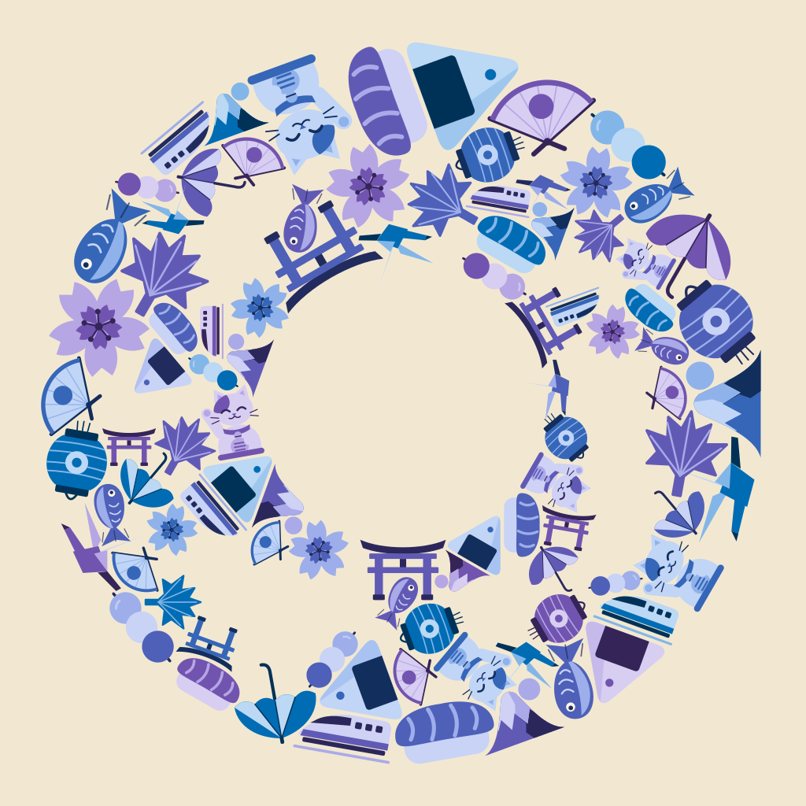
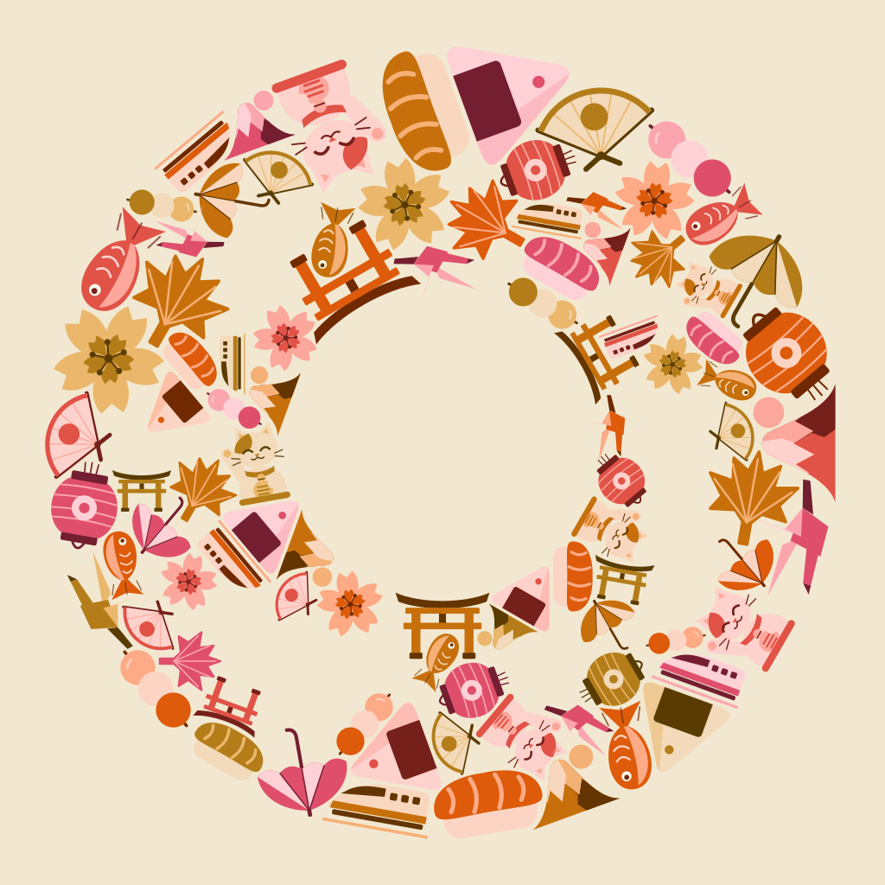
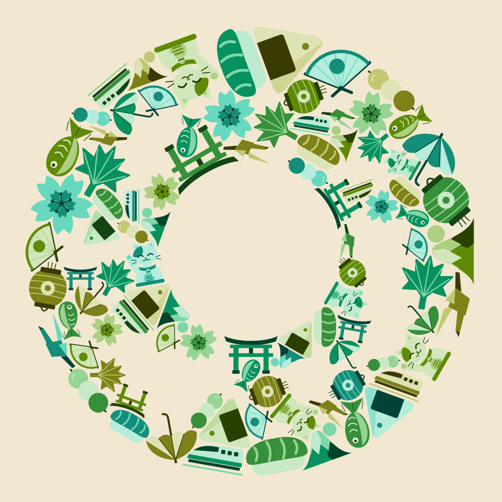
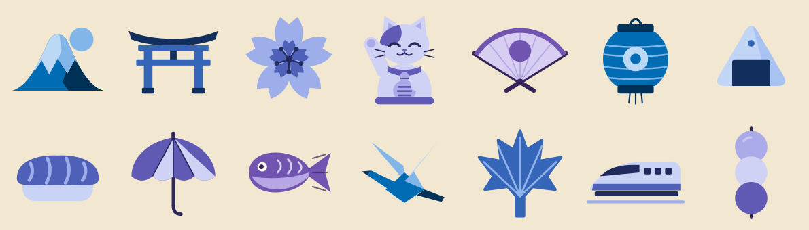

A 藍紫 blue → indigo → violet
色相 248°–296°：藍、靛、藍紫。最接近 App 現在的墨藍與天空色。

B 暖色 rose → vermilion → amber
色相 12°–76°：玫紅、朱、橙、琥珀。最有日本味。

C 綠色 yellow-green → teal
色相 112°–176°：黃綠、草綠、青綠。最清爽。

現行圖示（對照）
天空漸層＋一個「旅」字。
用到的 14 種物件
富士山、鳥居、櫻花、招き猫、扇子、提燈、飯糰、壽司、和傘、鯉魚、折り鶴、楓葉、新幹線、團子。每種約出現 6–7 次，大小與角度都不同；相鄰的片盡量用不同色相。
